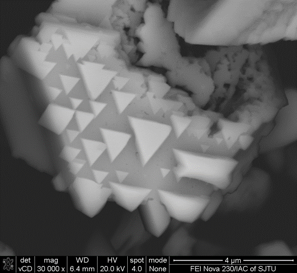

<section>
    <article id="2015-ml30">
        <div class="cell-image">
            <a href="image/activities/MoS2.png" class="image thumb-big">
                
            </a>
        </div>
        <div class="cell-text-photo">
            <h3>MoS2 array growth</h3>

            <p>
                Out of the idea of utlizing the MoS2 to catalyze the HER, work has been done to grow MoS2 nanosheet on high-surface area susbtrates, ensuring to expose enough active sites. While our group tried to in-situ grow MoS2 nanosheet on FeNi foam by CVD method to achieve outstanding performance torwards HER and OER. In this process, it is interesting to find out there is an interface layer of metal sulfides which may have contribution to catalysis. We think it is important to make it clear to find out how such interface affects the catalytic activity of the MoS2, as in previous understanding about self-supported catalysts, we may consider the main adavantages of such strucure as high expoesd active sites and low resistance. But the influence of the substrates on the intrinsic catalytic activity is merely discussed. So I expect to find the proof of the influence of substrates on the MoS2.<br />
                So I made some effort to try to grow MoS2 nanosheet arrays on Cu foam, CuNi foam, FeNi foam, and Ni foam.
               <!-- <li>
                    Using CVD method to grow MoS2 on the substrates using the S powder and MoO3 powder.<br />
                    - Cu mesh,Cu foam,CuNi foam, FeNi foam, CoNi foam are selected to sevre as susbtrates<br />
                <li>
                    Pursuing high HER activity, which means low overpotential<br />
                    - Among the substrates, CuNi foam shows the best performance of overpotential of 180mV<br />
                <li>
                    Trying to find the role of substrates play in the catalysts<br />
                    - The interface of transitional metal sulfides may have a promoting effect of the catalysts<br />
                -->  
            </p>
        </div>
    </article>
